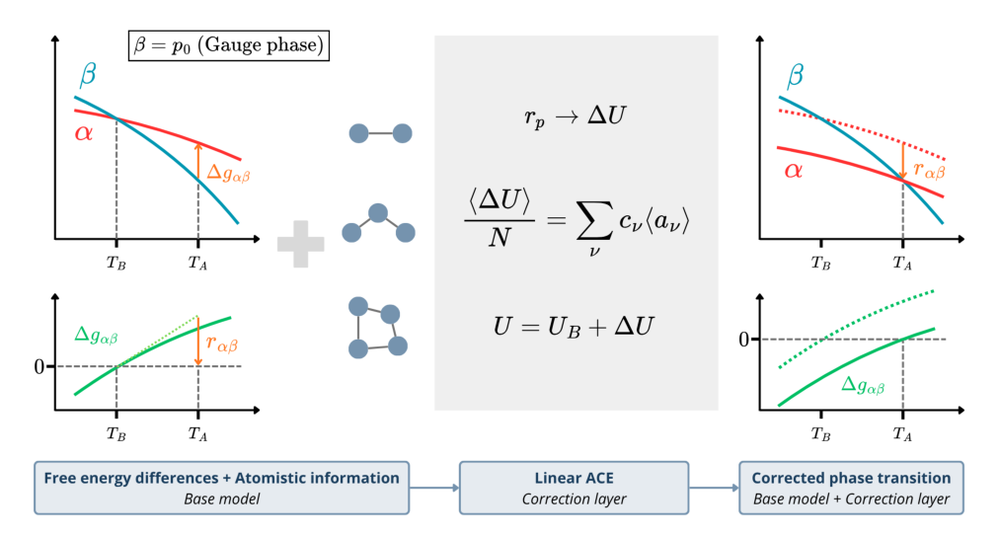
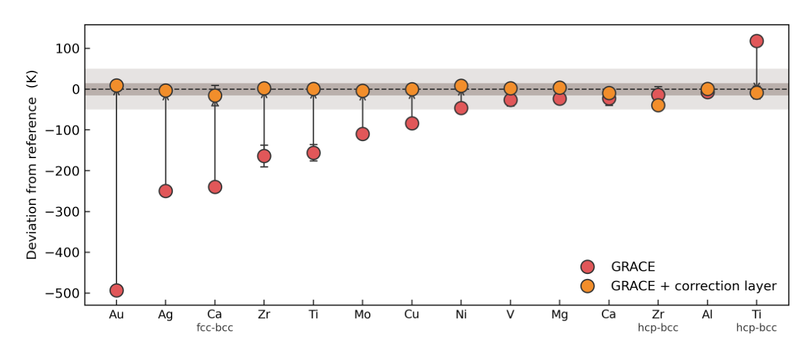
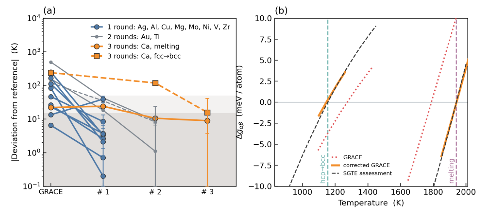
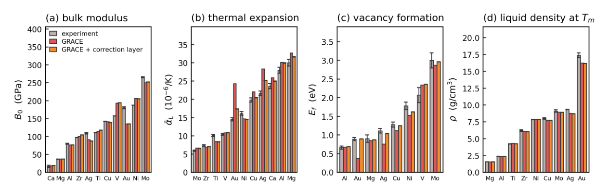
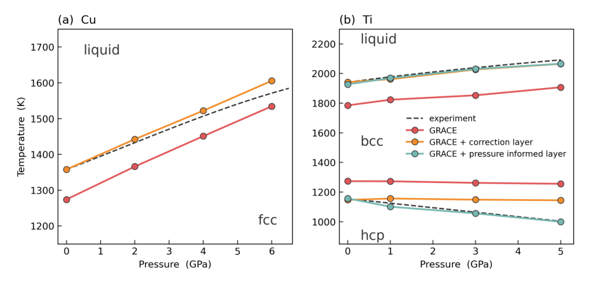

热力学校正层：怎样把相变温度的误差变成可用于原子模拟的能量修正
论文原文 ↗原文：Sarath Menon、Braulio Sánchez Ortega、Ralf Drautz，A thermodynamic correction layer for machine learning interatomic potentials，arXiv，2026年10月。官方页面｜原始 PDF
机器学习原子间势能让大尺度模拟接近第一性原理精度，但它学到的是训练数据所采用的电子结构方法。即使很好地复现了某种密度泛函，预测的熔点和固—固相变温度也可能偏离实验热力学。原因是相变由两相自由能的交点决定：每原子只有几 meV 的相对能量偏差，就可能把交点推开几百 K。
这篇工作提出一层附加势能：保留基础势模型，用目标相变温度反推出两相需要怎样的自由能调整，再把它转换成原子构型的能量训练目标，拟合一个小型线性修正势。 修正后重新计算自由能，继续调整，直到相变温度进入设定范围。原模型不需要重新训练，也不需要对分子动力学轨迹求导。

图1｜左侧是基础势给出的两相自由能与偏移的交点，中间把相级修正转换成线性 ACE 势能，右侧是加入修正后的相变。
一、从一个熔点误差出发，怎样得到能量目标
先计算两相自由能，定位交点与斜率
设低温稳定相为 α，高温稳定相为 β；熔化时，它们就是固体和液体。两相每原子的 Gibbs 自由能差为 Δg=gα−gβ。Δg=0时，两相共存，对应相变温度。基础势预测交点 T_B，而热力学参考给出目标 T_A。
作者采用 SGTE 纯元素热力学评估作为参考。这样的评估把实验资料整理成各相一致的热力学描述。基础势一侧，则使用 calphy 计算自由能：先把固体或液体与已知自由能的参考模型连续连接，得到一个温度处的绝对自由能，再以可逆缩放沿温度区间计算整条分支。两条分支的交点给出 T_B，交点附近自由能差的斜率给出相变熵差 Δs_B=sα−sβ。
需要补上的自由能差可以在交点附近估算为：
所需相自由能修正 r ≈ Δs_B × (T_A−T_B)。
这个关系把“熔点低了多少 K”转成了“固体相对液体应改变多少 meV/atom”。例如，Cu 在一次修正中的温差约为88 K，对应约−8.6 meV/atom的固—液自由能差修正。若保持固体能量近似不变，就需要把液体相对抬高约8.6 meV/atom，让它到更高温度才与固体自由能相交。
相自由能如何变成原子构型的能量标签
相不是一个静态结构，而是在给定温度和压力下不断涨落的一组构型。向基础势 U_B 加入一个较小的修正 ΔU 后，热力学微扰理论给出：某相自由能的一阶变化，等于在原势采样的该相构型中，修正能量的平均值。
于是，两相所需的自由能调整对应：
r ≈ ⟨ΔU/N⟩α − ⟨ΔU/N⟩β。
这里 N 是原子数，尖括号表示相中许多构型的平均。自由能目标因此转化为修正势在两类原子环境中应给出的平均能量差。
要落实到每个构型，作者选一个相作为能量基准。只有熔化时，通常让固相修正接近零，将目标分配给液相；Ca、Ti、Zr 同时包含低温固相、bcc相和液体，便把连接两次转变的 bcc 设为基准，给另外两相分配相应目标。一次修正中，同一相采样的构型使用相同目标，并额外提高相平均能量差这一条件的拟合权重。
这些标签来自热力学关系，而非为每个构型重新进行 DFT。最终学到的仍然是依赖原子环境的连续势能函数，可以在分子动力学中给出能量和力。
二、为什么用线性 ACE，以及为什么需要迭代
用局部原子环境区分相，再把贡献加回原模型
ACE 即原子团簇展开，用一组描述原子邻域的基函数表示能量，涵盖邻居距离、角度和更高阶多体关系。线性 ACE 将这些基函数乘以待拟合系数，再对全部原子求和：ΔU=Σ原子Σ基函数 cνBν。所谓“线性”，是指能量对系数 cν 为线性；它对原子位置依然具有多体几何依赖。
多数元素的修正层只有62个基函数；需要较大修正的 Ag 和 Au 分别使用78和136个。由于固体、液体和不同晶相具有不同的局部环境，修正层可以对它们给出不同平均能量。它没有显式温度输入，随温度变化的热力学贡献来自各相实际采样环境的变化。
拟合同时限制修正幅度和引入的力，并对随机结构、二聚体及探测模拟得到的环境设置能量范围。Ag、Au 还加入静态晶体形变结构，使较大相变修正与原有低温能量曲线共同受到约束。最终运行时使用 U=U_B+ΔU，基础 GRACE 模型继续提供主要的原子相互作用，附加层调整相对相平衡。
通过重新计算自由能逐轮更新
修正势也会改变采样分布，因此实际自由能变化与一次线性估算会有差异。作者采用逐轮更新：用当前总势重新定位相变与斜率，计算剩余热力学误差，重新采样两相构型，拟合一个增量修正，再把它累加到已有层上。
每轮在当前相变温度及上下75 K采样，并包含低温固体构型，帮助修正在一段温度区间内主要表现为相对自由能的平移。固—固转变的熵差较小，少量能量调整就会推动交点，作者也对其更新步长作阻尼处理。
最后，以重新计算的相变温度决定是否继续：熔点距参考不超过15 K，固—固转变不超过50 K。这里训练的是小型附加层，自由能计算和采样使用当前修正后的完整势。
三、结果：11种元素的14个相变都进入目标范围
基础模型是 GRACE-2L-SMAX-OMAT-large。测试包括 Ag、Al、Au、Ca、Cu、Mg、Mo、Ni、Ti、V、Zr 的熔化，以及 Ca 的 fcc→bcc、Ti 和 Zr 的 hcp→bcc，共14个转变。每种元素独立拟合；有两个转变的元素使用同一套系数同时处理。

图2｜红色为原 GRACE，橙色为加入收敛修正层后；灰色区间对应熔化15 K、固—固转变50 K的目标范围。
| 元素及转变 | SGTE参考/K | 原GRACE/K | 修正后/K | 修正轮数 |
|---|---|---|---|---|
| Au熔化 | 1337 | 844±4 | 1346±2 | 2 |
| Ag熔化 | 1235 | 985±7 | 1232±3 | 1 |
| Cu熔化 | 1358 | 1274±2 | 1358±1 | 1 |
| Ti hcp→bcc | 1155 | 1273±9 | 1147±16 | 2 |
| Ti熔化 | 1941 | 1785±20 | 1942±10 | 2 |
| Ca fcc→bcc | 716 | 477±12 | 700±25 | 3 |
最明显的是 Au：原势熔点低约493 K，两轮修正后进入参考值附近。多数元素一轮即可完成，Au、Ti需两轮，Ca需三轮。对于 Ti，同一修正层把原本偏高的 hcp→bcc 温度向下移，同时把偏低的熔点向上移，说明方法能同时调整三个相的相对自由能。

图3｜左侧展示不同转变逐轮接近参考温度；右侧展示 Ti 两次转变的自由能差，橙线交点都移到参考温度附近。
四、相变温度修正后，原模型的其他性质怎样变化
摘要强调的另一点是，附加层调整相平衡时保留了基础势的主要结构描述。作者比较了静态能量—体积曲线、体模量、热膨胀、空位形成能和液体性质。
静态曲线仍有平滑极小值，相关多晶型的零温能量排序保持；体模量变化较小。液体径向分布函数的主要峰位和峰高也接近原势，表明局部配位结构大体保留。修正主要通过各类环境的相对能量改变共存温度。

图4｜灰色为实验，红色为原 GRACE，橙色为修正后；四个面板依次为体模量、平均线性热膨胀、空位形成能和各势熔点处的液体密度。
与相平衡更紧密相关的性质会随之变化。Au、Ag、Cu 的热膨胀系数降低，向实验值靠近；多种元素的空位形成能提高，在原势低估的 Au、Ag、Cu、Ni、Mo 中也更接近实验。作者提出一个物理联系：抬高液体的能量也可能抬高空位邻近欠配位环境的能量。
分别在各自熔点处评价时，液体密度变化不大；若统一在参考熔点的1.03倍温度比较，Ag和Au的液体密度分别提高约3.0%和5.8%，其余元素变化约在1%以内。这些变化正是相对能量校正与重新采样共同产生的响应。
五、把压力信息接入同一修正层
零压修正后的 Cu 熔化曲线保留原模型的压力变化趋势，在4 GPa以内距所采用的实验拟合曲线不超过15 K，6 GPa时高约35 K。对于 Ti，零压校正已改善熔化曲线，但 hcp→bcc 相界的压力斜率需要额外信息。
作者于是将1、3、5 GPa下的构型采样和相变参考一起纳入 Ti 修正层，仍用同样的相自由能—构型能量映射。所得层同时再现采样压力范围内的熔化与 hcp→bcc 相界。

图5｜Cu 使用零压拟合层；Ti 对比零压层与加入压力信息的层，青色结果进一步调整了固—固相界的压力依赖。
这项工作的贡献，是在可迁移原子模型与经过评估的相热力学之间建立一条可拟合的连接：基础模型保留微观相互作用与构型表达，热力学参考决定需要怎样调整相对自由能，小型修正层将两者接入同一套原子模拟。它既能利用已有基础势，又能把实验相变信息转成连续的能量和力，为面向相平衡的模拟提供模块化校准方式。
原始摘要完整中文翻译
机器学习原子间势使原子尺度模拟能够在较大的空间和时间尺度上达到接近第一性原理的精度。基础模型将这一能力扩展到整个周期表，但也继承了生成其训练数据所采用的电子结构方法的热力学描述。因此，相对相稳定性中的小误差可能导致相变温度中的大误差。
我们提出一个附加的热力学校正层，在不重新训练或修改基础势的情况下，将相自由能移向经过评估的参考描述。一阶热力学构造将所需的相自由能位移直接转换为构型能量目标，使用线性原子团簇展开进行拟合，并根据计算得到的自由能迭代细化。我们以基础 GRACE 模型为例，将该方法应用于具有不同晶体结构的多种元素的熔化和固—固转变。
修正后，所有相变温度都位于评估值的规定容差范围内，包括同时校正固—固转变和熔化的 Ca、Ti、Zr。静态能量曲线、体模量和液体结构仍接近基础模型。空位形成能、热膨胀和液体密度取决于修正后的相平衡，并在修正较大时发生变化。
该方法既不需要重新训练、可微动力学，也不需要访问基础势的参数。它提供了一条模块化路线，将可迁移的原子模型与经过评估的相热力学结合起来。